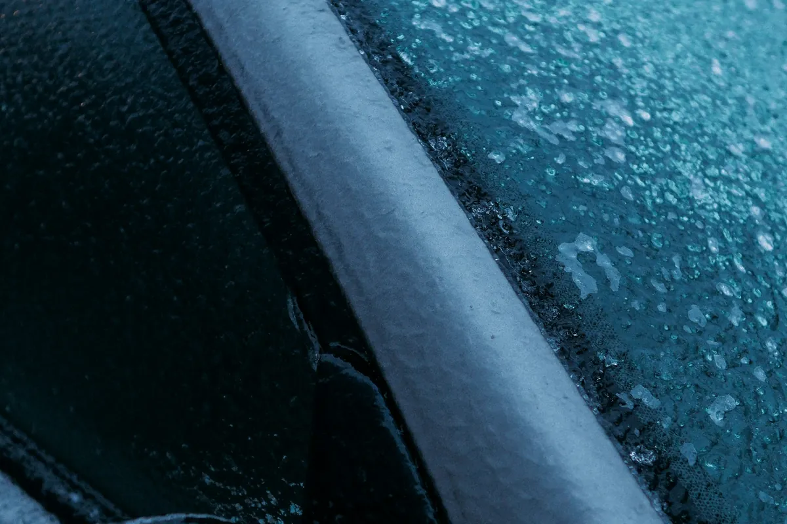

Windshield chip repair in Bowie stops a fresh stone chip before it turns into a crack. Bowie Auto Glass Repair fills the chip with clear resin in about 30 minutes at your home or office, keeping your original windshield and its factory seal.

Windshield chip repair starts with cleaning the chip and drying out any moisture trapped inside. A bridge tool is mounted over the damage with suction cups, and it pulls air out of the break and then pushes clear resin in under pressure. Once the resin fills the break, a UV light cures it hard, and the surface is scraped and polished smooth. Most chips become much harder to see and stop spreading.
Round and star-shaped chips under a quarter are the best candidates.
A single crack under about six inches can often still be filled.
Filling a chip before the first freeze keeps water from getting in.
A clean repair helps avoid a charge for damaged glass at turn-in.
Stones from trucks on Route 50 and Route 301 are the usual cause.
Repairs leave a faint mark, so they work best away from the driver’s eye line.
A chip is a break in the outer layer of glass, and every change in temperature puts stress on its edges. Cold Maryland nights, a hot defroster in the morning and summer sun on a dark dashboard all make the glass flex. Potholes and slammed doors add shocks. Dirt and water that get into an open chip also make it harder to repair cleanly later, which is why filling it early matters.
The cost of windshield chip repair in Bowie depends on how many chips there are and how big they are. One small chip is the quickest job, while several chips or a short crack take more time and resin. Many insurance companies cover chip repair under comprehensive coverage and skip the deductible, because a repair costs them far less than a new windshield. Call for a free quote and we will check.
| Chip repair | New windshield | |
|---|---|---|
| Damage size | Chips under a quarter, cracks under about 6 inches | Larger chips, long cracks or many breaks |
| Factory seal | Stays untouched | Replaced with a new urethane bond |
| Time | About 30 minutes | About an hour, plus cure time |
| Calibration | Not needed | Often needed on newer vehicles |
If the damage is too large to fill, windshield replacement in Bowie is the safer fix. You can also see all auto glass services in Bowie.
Most chip repairs take about 30 minutes on site, and you can drive right away. The resin is cured with UV light, so there is no waiting for it to dry.
Usually it becomes much harder to see, but a faint mark often remains. The main goal is to stop the chip from spreading and to restore strength to the glass.
Clear tape over the chip helps keep dirt and water out until the repair. Avoid blasting hot defrost air straight at the glass on a cold morning, since that can make the chip run.
Yes. The glass is warmed gently and dried first so the resin can flow into the break. On very cold or wet days we work in a garage or covered spot.
Call for a free chip repair quote in Bowie. It usually takes about 30 minutes, right where you park.
Call (240) 824-0566 Now